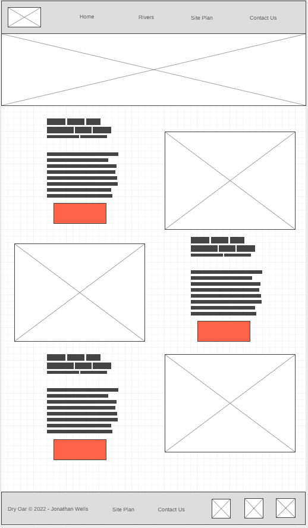

Overview
Purpose
This site's purpose is to point all those hardcore white water rafters to all the best spots, the best people and the best equipment!
Audience
This site is for all the white water rafters that want to get the best white water and are disappointed with all the other lame sites out there. The ones that only point you to the biggest names rather than the most exciting locations. Not this one, whether you are on the road or at home, longing for the most extreme white water rafting experience just log onto this website and we'll point you to your next summer adventure!
Branding
Website Logo

Style Guide
Color Palette
Palette URL:
https://coolors.co/2686e0-db3a34-ffc145-fffffb| Primary | Secondary | Accent 1 | Accent 2 |
|---|---|---|---|
| [#2686E0] | [#FFC145] | [#DB3A34] | [#FFFFFB] |
Typography
Heading Font: Patua One
Paragraph Font: Lora
Normal paragraph example
The best Whitewater Rafting in Colorado, White Water Rafting Company offers rafting on the Colorado and Roaring Fork Rivers in Glenwood Springs. Since 1974, we have been family owned and operated, rafting the Shoshone section of Glenwood Canyon and beyond.
Colored paragraph example
Trips vary from mild and great for families, to trips exclusively for physically fit and experienced rafters. No matter what type of river adventures you are seeking, White Water Rafting Company can make it happen for you.
Navigation
Site Map
Wireframes
Home

Rivers
